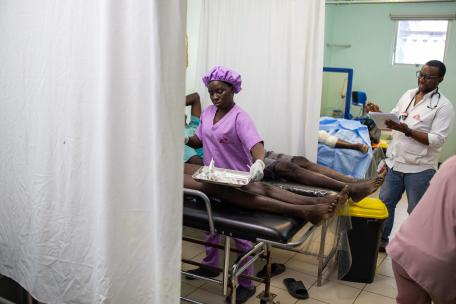

La nostra pàgina web
A aquesta pàgina web trobaràs informació sobre les nostres activitats i campanyes
d'ajuda humanitèria on
intentem millorar la situació
i la vida de les persones que més ho necessiten i estan en una
situació desfaborable.
Trobaràs notícies relacionades amb les campanyes
que duem a terme i amb totes aquestes persones que
necessiten la nostra ajuda.
Per últim trobaràs una secció on podràs associar-te amb
nosaltres per estar al tant de les últimes
notícies i pròximament poder
aportar per ajudar a quí mes o necessita.
Greu augment de víctimes i ferits en un Port-au-Prince sumit al caos

L'estat d'emergència a la capital d'Haití desencadenat després d'un possible
ajornament de les
eleccions generals provoca un greu
augment de ferits a la ciutat,
especialment de dones, nens, nenes i grans.
Enllaç a les notícies
La violència continua desplaçant milers de persones a Cabo Delgado
Sis anys després del començament del violent conflicte al nord de Moçambic,
la població de Cabo Delgado segueix vivint amb por. Només el 2024, més
de 80.000 persones
van tenir de fugir després dels atacs dels grups armats.
Enllaç a les notícies
Objectiu urgent, protegir les dones i les nenes de l'hepatitis E
Llancem una campanya de vacunació massiva per frenar un brot mortal
d'hepatitis E al Sudan del
Sud. Des d'abril del 2023,
s'han tractat 501 casos
al nostre hospital a Old Fangak, a l'estat de Jonglei, i 21 persones
-principalment dones- han mort.
Enllaç a les campanyes
Dins la nostra maternitat d'Al-Qanauis

Hi ha un petit reducte d'esperança, al cor del Iemen, un país en conflicte
des del 2014.
Es tracta de la sala de pediatria de l'hospital maternoinfantil
d'Al-Qanauis, a la governació
d'Al-Hudaydah,
on oferim serveis sanitaris
de qualitat a nens i nenes entre 1 mes i 15 anys.
Enllaç a les campanyes